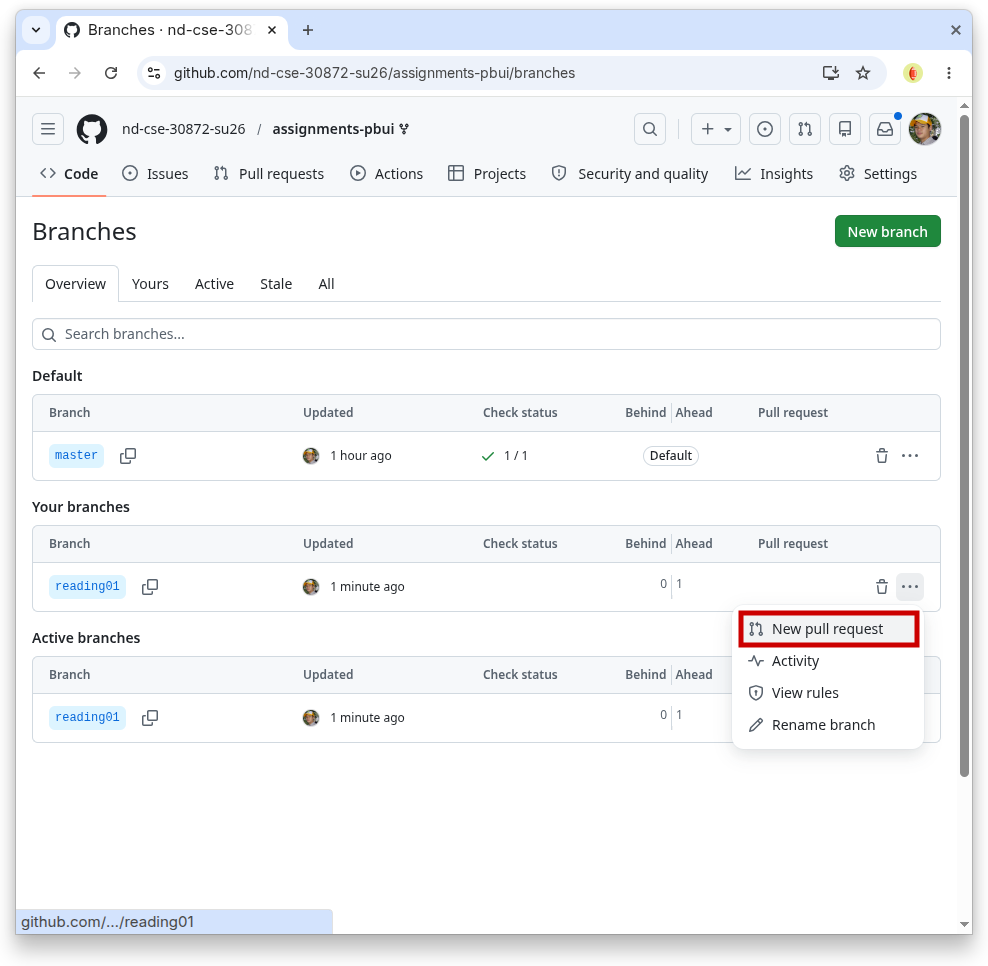
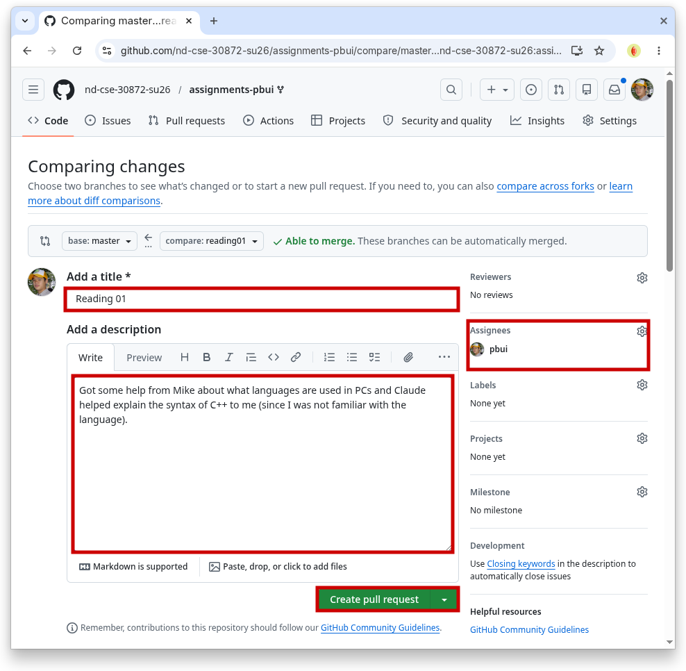
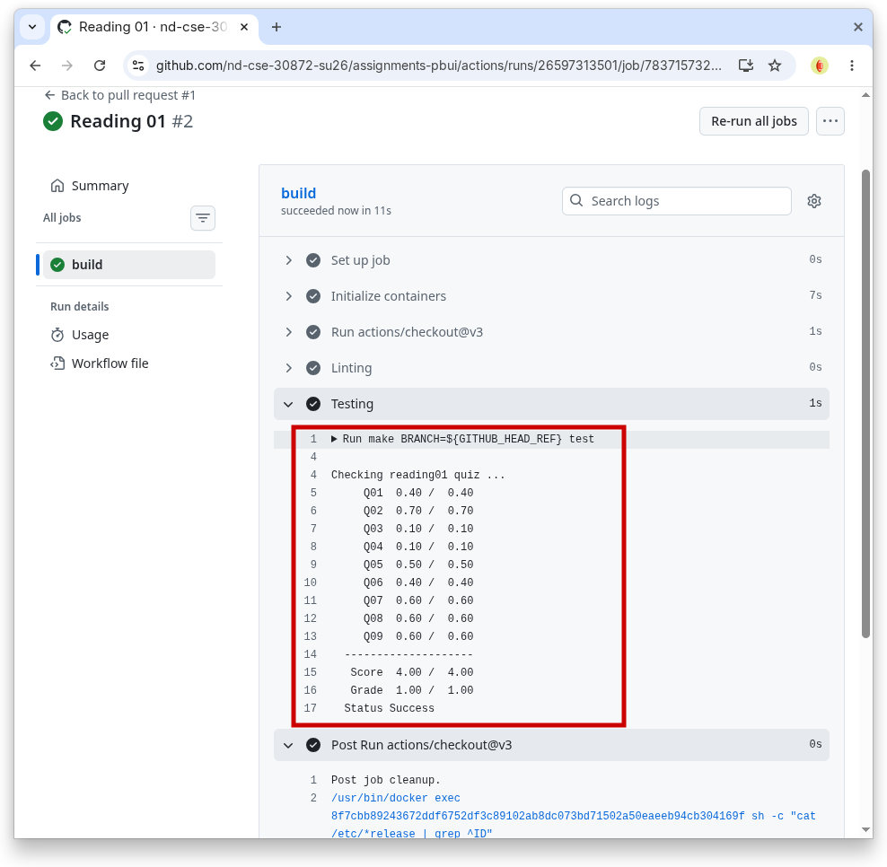

Everyone:
Next week, we will provide a brief overview of the course and then dive into reviewing performing basic I/O in C, C++, and Python. Next, we will refresh our understanding of algorithmic complexity before discussing sequence containers such as arrays, lists, stacks, and queues. While these are rather basic data structures, it is important to understand their properties and behavior, which we will take advantage of in Challenge 01, Challenge 02, and Challenge 03.
We will also discuss good coding style and the use of linters to analyze source code.
Reading¶
The readings for Wednesday, June 03 are
-
Competitive Programmer's Handbook
-
Chapter 1 Introduction
-
Chapter 2 Time Complexity
-
Chapter 4 Data Structures
Quiz¶
Once you have done the readings, answer the following Reading 01 Quiz questions:
Python 3¶
Throughout the semester, we will be using Python 3 for a variety of purposes. Because the student machines have an older version of Python 3 by default, you will need to add the following line to your
~/.bashrcfile:export PATH=/escnfs/home/pbui/pub/pkgsrc/bin:$PATHYou can then
sourcethis file to load that environment variable:$ source ~/.bashrcTo check that Python 3 works, you can run the following:
$ python3 -V Python 3.12.4This will be necessary for the
.scripts/check.pyscript in your assignments repository.To submit your answers, you will need create a
answers.jsonoranswers.yamlfile in thereading01folder of your assignments repository:-
For this class, you must use a separate git branch for each assignment. This means that the work for each reading and challenge must be done in a separate branch. To create and checkout a new branch, you can do the following:
$ git switch master # Make sure we are in master branch $ git pull --rebase # Make sure we are up-to-date with github repository $ git switch -c reading01 # Create reading01 branch and check it outOnce you do the above, you should see the following output for the git-branch command:
$ git branch master * reading01The
*indicates that we are currently on thereading01branch.You can either hand-write the
answersfile using your favorite text editor or you can use the online form to generate the JSON data.The
answers.jsongenerated using the online form may look like the following:{ "q1": [ "python" ], "q2": [ "n2", "nf", "nlogn", "1", "n", "sqrtn", "logn" ], "q3": "n", "q4": "n" }To determine which symbols correspond to which response, take a look at the Reading 01 Quiz file.
To check your answers, you can use the provided
.scripts/check.pyscript:$ cd reading01 # Go into reading01 folder $ $EDITOR answers.json # Edit your answers.json file $ ../.scripts/check.py # Check reading01 Checking reading01 quiz ... Checking reading01 quiz ... Q01 0.10 / 0.40 Q02 0.00 / 0.70 Q03 0.00 / 0.10 Q04 0.00 / 0.10 -------------------- Score 0.10 / 1.30 Grade 0.08 / 1.00 Status FailureThis script will send your
reading01/answers.jsonfile to dredd, which is the automated grading system. dredd will take your answers and return to you a score as shown above. Each reading is worth 1.0 points.Note: You may submit your quiz answers as many times as you want; dredd does not keep track of who submits what or how many times. It simply returns a score.
Once you have your answers file, you need to add, commit the file, and push your commits to GitHub:
$ git add answers.json # Add answers.json to staging area $ git commit -m "Reading 01: Quiz" # Commit work $ git push -u origin reading01 # Push branch to GitHubNote: You may edit and commit changes to your branch as many times as you wish. Just make sure all of your work goes in the appropriate branch and then perform a
git pushwhen you are done.When you are ready for your final submission, you need to create a pull request via the GitHub interface:
-
First, go to your repository's Branches page and then press the New pull request button for the appropriate branch:

Next, edit the pull request title to "Reading 01", write a description if necessary, assign the pull request to the instructor and then press the "Create pull request" button.

Every commit on GitHub will automatically submit your quiz or code to dredd and the results of each run is displayed in the Checks tab of each commit as shown below:

Once you have made the pull request, the instructor can your work and provide feedback via the discussion form inside the pull request. If necessary, you can update your submission by simply committing and pushing to the appropriate branch; the pull request will automatically be updated to match your latest work.
When all work is graded, the instructor will merge your branch and close the pull request.
Acknowledgments¶
If you collaborated with any other students or received help from AI tools on this assignment, please described this support in the description of your Pull Request.
-